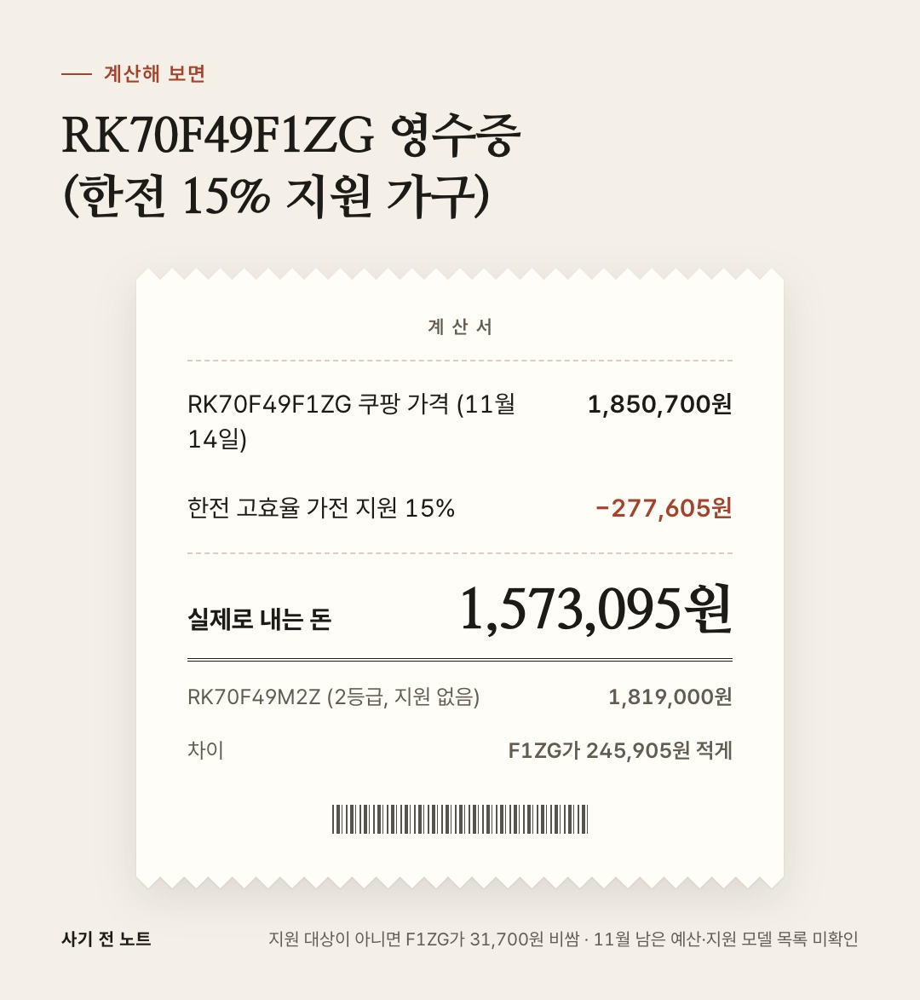
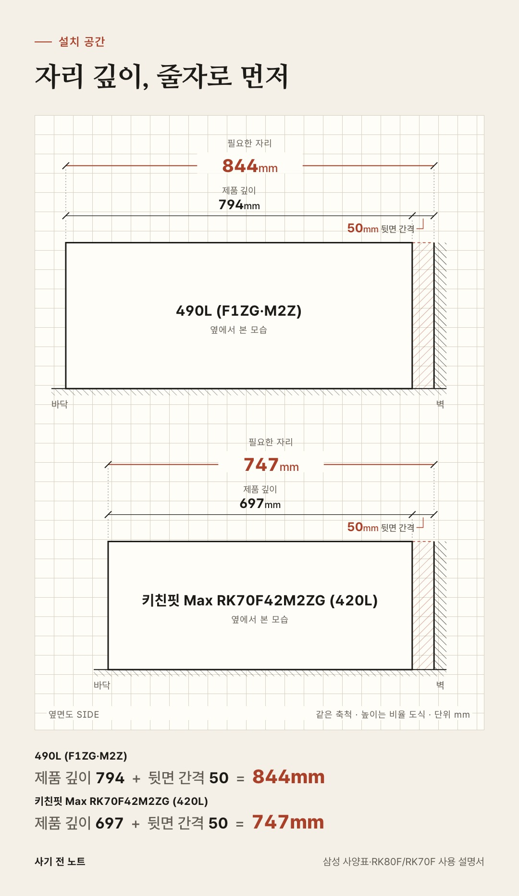
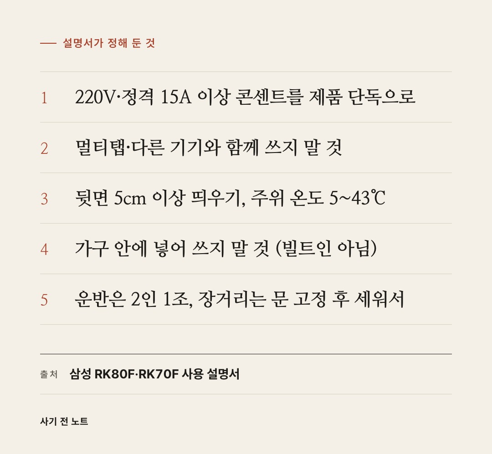

이 게시물은 쿠팡 파트너스 활동의 일환으로, 이에 따른 일정액의 수수료를 제공받습니다.
삼성 김치냉장고 F1ZG 영수증, 비싼 1등급이 245,905원 덜 드는 집
같은 490L, 같은 깊이 794mm. 삼성 김치냉장고 RK70F49F1ZG는 RK70F49M2Z보다 31,700원 비싸요. 그런데 전기요금 복지할인을 받는 출산가구·다자녀 집이라면 계산이 뒤집혀서, 비싼 쪽이 245,905원 덜 들어요.

1,850,700원이 1,573,095원이 되는 순서
RK70F49F1ZG, 11월 14일 쿠팡 목록 기준 1,850,700원.
한전 고효율 가전 구매비 지원 15%를 받으면 277,605원이 돌아와요.
실제로 내는 돈은 1,573,095원.
M2Z는요? 1,819,000원 그대로예요. 2등급이라 지원 대상이 아니거든요. 그래서 15% 대상 가구에서는 F1ZG가 245,905원 싸고, 대상이 아니면 F1ZG가 31,700원 비싼 채로 남아요.

지원 대상 가구라면 이 모델, RK70F49F1ZG(11월 14일 쿠팡 1,850,700원) — 가격·구매처 보기
지원 조건은 7월 17일 비건뉴스 보도 기준이에요. 2026년 사업은 전기요금 복지할인 가구만 받을 수 있고, 다자녀·대가족·출산가구는 15%, 기초생활수급·차상위·중증장애인 등은 30%. 한도는 가구당 누적 30만 원, 구매 기간은 12월 31일까지인데 예산이 떨어지면 일찍 끝난다고 해요. 신청할 때는 에너지소비효율등급 라벨 사진, 제조번호 명판 사진, 거래내역서와 영수증이 필요하다고 해요.
걸리는 점 하나. 11월 현재 남은 예산과 지원 모델 목록은 확인하지 못했어요. 이 둘에 따라 위 계산이 통째로 달라지니, 주문 전에 한전 고효율 가전제품 구매비용 지원사업 홈페이지부터 열어 보세요.
지원이 없으면 31,700원 차이에 무엇이 들어 있나
김치통 32.7L. F1ZG에만 상칸 김치통 3개(10.9L씩)가 있어서 김치통 용량이 114.9L, M2Z는 82.2L예요(삼성 사양표, 상/중/하칸 3/4/2개와 -/4/2개).
전기는 차이가 작아요. 사양표 표시값으로 F1ZG 1등급 월 14.8kWh, M2Z 2등급 월 15.8kWh. 집 전체가 한 달 300kWh 쓰는 집이면 1년에 약 3,100원 차이라 가격 차이를 뒤집지는 못해요. 실제 사용량은 집마다 다르고요.
무게는 162kg과 156kg. 맞춤숙성실·자동 문열림은 둘 다 없고, 빅스비는 둘 다 미지원으로 적혀 있어요.
통을 나중에 더 살 생각이라면? 설명서는 김치통을 따로 사려면 판매처에 문의하라고만 하고, M2Z 상칸에 맞는 통은 공식 자료에서 찾지 못했어요. 처음부터 통이 오는 F1ZG가 덜 번거로운 이유예요.
지원 없이 통이 덜 필요한 집, RK70F49M2Z(11월 14일 쿠팡 1,819,000원) — 가격·구매처 보기
쿠팡에서는 세 옵션 모두 '방문설치'로 표시돼 있었고, 쿠폰이 붙은 옵션도 있어 차이는 조건에 따라 달라질 수 있어요. 삼성닷컴 목록에 있는 RK70F49M1A·RK70F49F1XJ·RK80F49C1X는 쿠팡에서 개인 판매자 단건으로만 보여 링크하지 않았어요.
줄자로 먼저 재 볼 숫자, 844mm
냉장고 놓을 자리의 벽부터 앞쪽까지 깊이를 재 보세요.
- 490L(F1ZG·M2Z): 본체 깊이 794mm(손잡이 포함) + 설명서가 요구하는 뒷면 간격 50mm = 844mm
- 키친핏 Max RK70F42M2ZG(420L): 697mm + 50mm = 747mm
844mm가 안 나오고 747mm는 넘는 자리라면 답은 420L예요.

RK70F42M2ZG는 M2Z보다 97mm 얕고, 김치통은 63.8L(-/4/2개)로 18.4L 적고, 141kg으로 15kg 가벼워요. 2등급, 월 13.5kWh. 가격은 오히려 71,000원 높은 1,890,000원이었어요. 문이 열리는 각도는 490L 125°, 420L 108°로 적혀 있어요.
자리가 747mm부터 844mm 사이라면, 키친핏 Max RK70F42M2ZG(11월 14일 쿠팡 1,890,000원)
콘센트와 바닥, 설명서가 정해 둔 것
세 모델은 같은 RK80F·RK70F 사용 설명서를 써요(부록 김치통 구성 표에 세 모델이 모두 있어요).
- 전원: 220V·정격 15A 이상 콘센트를 제품 혼자 쓰라고 해요. 멀티탭이나 다른 기기와 같이 쓰면 감전·화재 원인이라고 적혀 있고, 접지 콘센트와 코드를 빼기 쉬운 자리를 권해요.
- 전원 코드: 길이를 늘리거나 바꿔 쓰지 말고, 제품 뒤쪽에 멀티탭이나 이동식 전원 장치를 두지 말라고 해요.
- 설치: 전문 기사에게 맡기고, 가구 안에 넣어 쓰지 말 것(빌트인 제품이 아니고, 키친핏 Max도 같아요). 바닥은 튼튼하고 수평, 뒷면은 5cm 이상, 주위 온도는 5~43℃.
- 냉매 공간: 냉매가 가연성 R-600a라 냉매 8g당 1㎥의 설치 공간이 필요해요. 냉매 양은 제품 안 라벨에 있어요.
- 운반: 2인 1조로 손잡이를 잡고, 이사 같은 장거리는 문을 테이프로 고정해 세워서.
- 어린이: 제품 안에 들어가면 갇혀 숨질 위험, 문·서랍에 매달리면 넘어지거나 끼일 위험이 적혀 있어요.
- 김치통: 50℃ 이하 물로 손세척, 뚜껑은 식기세척기·식기건조기 금지.
- 폐기: 문의 패킹을 떼어 내고 관할 주민자치센터에 연락.

세 모델 지원 페이지에 적힌 전기용품 안전인증 번호 SE07003-21005는 11월 14일 제품안전정보센터 조회에서 '적합'으로 나왔어요(조회 화면의 기본 모델명은 RQ42A94A1AP).
이 글의 숫자는 삼성전자 모델 지원 페이지 사양표·사용 설명서(11월 14일 확인)와 같은 날 쿠팡 목록에서 옮겼어요. 세 냉장고 모두 제가 써 보지는 않았어요.
복지할인 고지서가 있다면 F1ZG, 없다면 M2Z. 그리고 그 전에 줄자 한 번, 844mm.
숫자를 가져온 곳
- 삼성 RK70F49F1ZG 모델 지원 페이지: https://www.samsung.com/sec/support/model/RK70F49F1ZG/
- 삼성 RK70F49M2Z 모델 지원 페이지: https://www.samsung.com/sec/support/model/RK70F49M2Z/
- 삼성 RK70F42M2ZG 모델 지원 페이지: https://www.samsung.com/sec/support/model/RK70F42M2ZG/
- 삼성 RK80F·RK70F 사용 설명서: https://downloadcenter.samsung.com/content/PM/202610/20261020150621895/KO/start_here.html
- 한전 고효율 가전 구매비용 지원(비건뉴스 7월 17일): https://www.vegannews.co.kr/news/article.html?no=384116
- 제품안전정보센터 SE07003-21005: https://www.safetykorea.kr/release/certDetail?certNum=SE07003-21005
- 전기요금: 한전 주택용 저압 요금표(2023년 11월 9일 시행), 연료비조정단가 5.0원(2026년 4분기 유지 보도)
#삼성김치냉장고 #김치냉장고김치통 #RK70F49F1ZG #RK70F49M2Z #RK70F42M2ZG